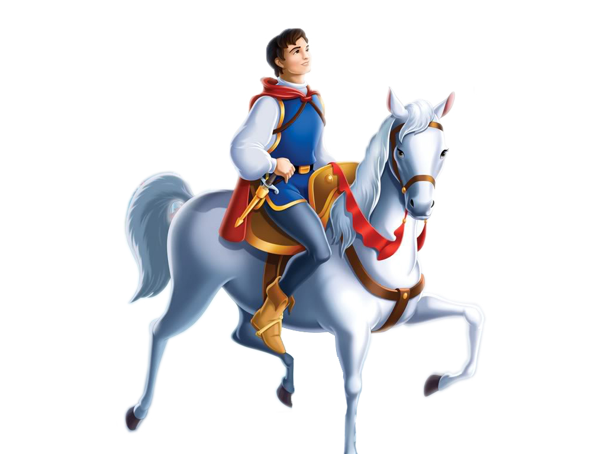

Prinsen red ut i vida världen för att leta efter en fru, men ingenstans fann han henne. Efter att ha varit hemifrån länge återvände han hem. Han var jätteledsen att komma hem utan en fru.
Även kungen och drottningen blev ledsna.
Prinsen förklarade att så fort han hade funnit någon, som han trodde skulle passa så visade det sig att det inte var någon riktig prinsessa.